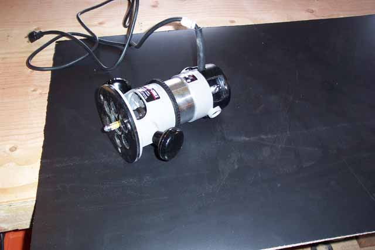

Okay, now a few words of
warning, laminate can be rather dangerous to handle and its edges are razor
sharp, so be careful when handling it so you don't slice open your hands.
(I found this out the hard way) Well, bandages
are in place, now time to do some cutting. Cut
the laminate into 2 2'X8' sheets, using roll on adhesive, prepare both
surfaces in a VERY well ventilated area, I looked at several adhesives,
all of them are noxious to say the least.
I
choose Wilsonart H2O adhesive for its easy of use, other contact adhesives
do not afford you much time to properly align your laminate as this one
does, and when working with such large sheets, mistakes could easily happen
and then you ruin both the woodwork you just did, plus the material cost.
Oh, the laminate cost $45 for the 4'x8' sheet, plus $18 for a small bucket
of adhesive and special application rollers. Again, if your
cost conscience, then go with contact paper, it wont look quite as nice,
but it will still do the trick and you wont need the additional cost of
a router or a Dremel with a router kit and all the time and mess of the
adhesive.
Patience is the key here.
Apply the adhesive onto the back of the laminate first as it takes longer
to dry and become tacky. Then the wood surface.
They will both become clear and shiny. Now your
ready to place the laminate onto the wood. Make sure when you
do this for the other wood panel it is on the opposite side, otherwise
you wind up with 2 panels laminated on the same side and you'll have to
dish out another $45 to laminate the other sides (I planned to put black
contact paper on the inside to save costs since barely any of the inside
is visual.)

Using
a solid roller you firmly roll over the laminate to make a solid bond to
the wood. Run this over several times and then let the
piece sit while you work on the other panel. I let both pieces
sit for about 1 hour to allow for a good bond and curing before moving
onto trimming the laminate using a Router with a laminate trim bit.